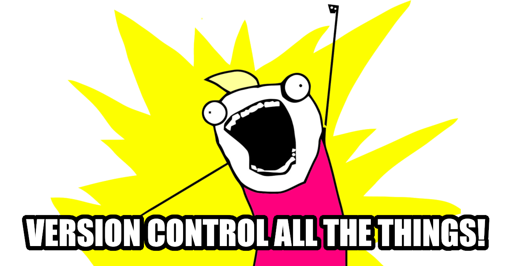
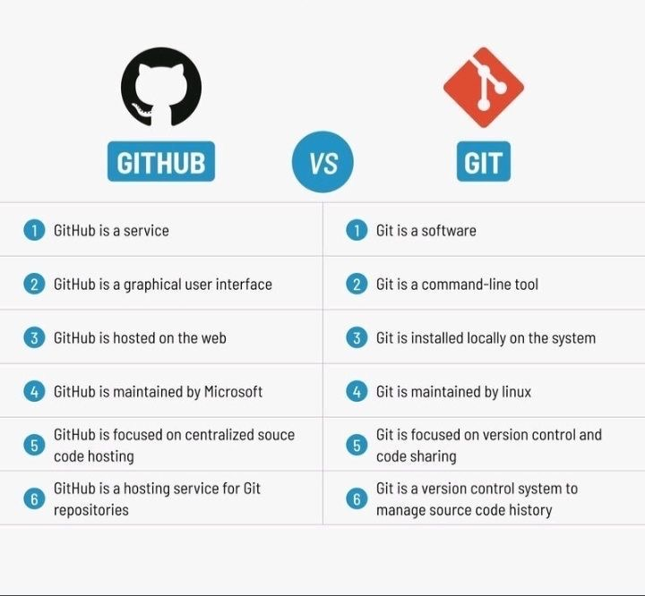
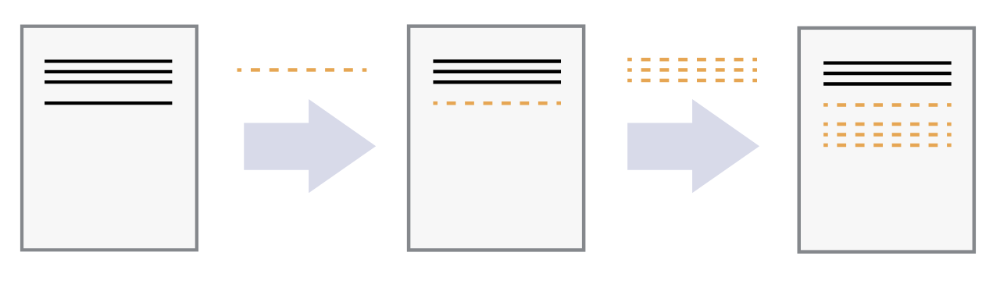
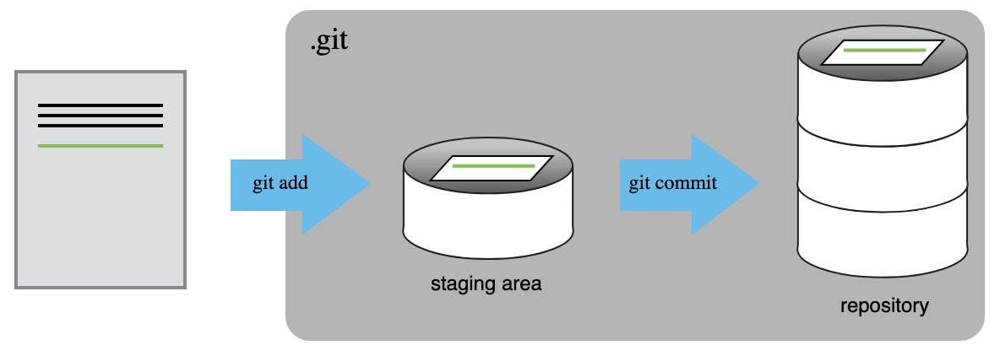
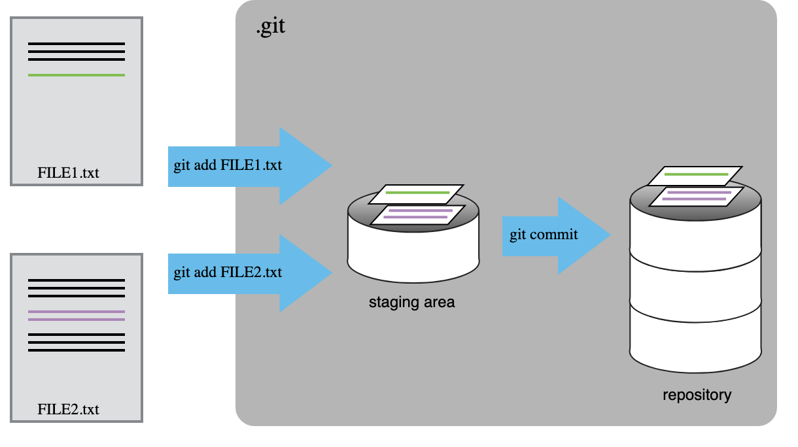
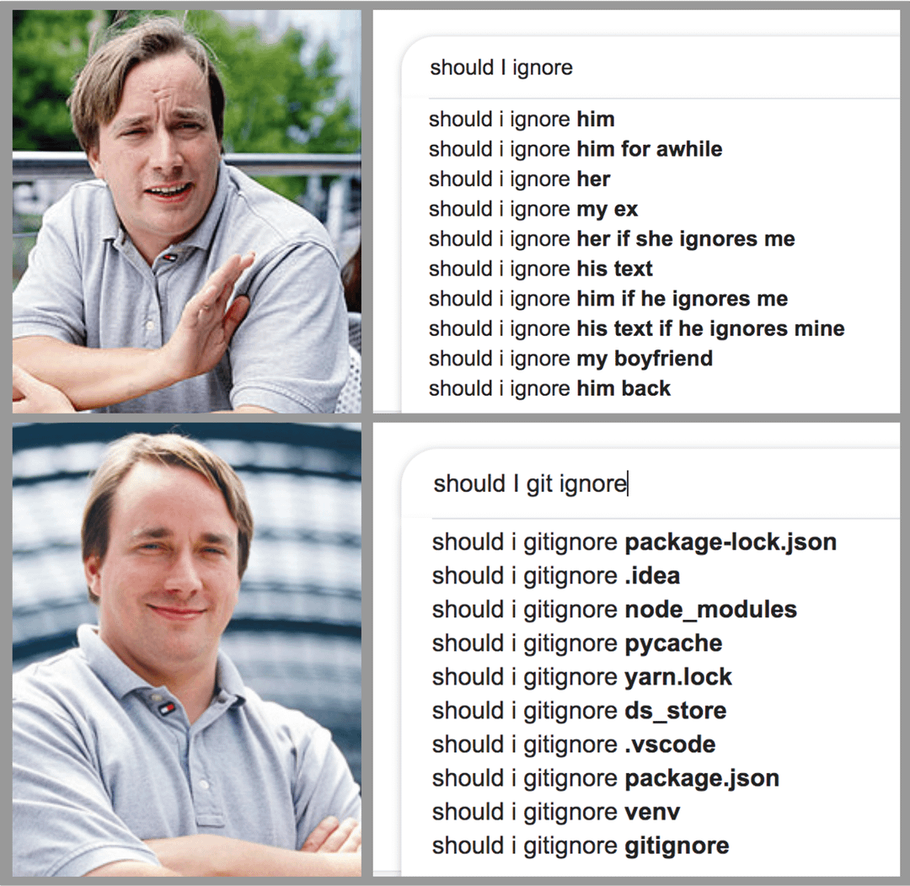
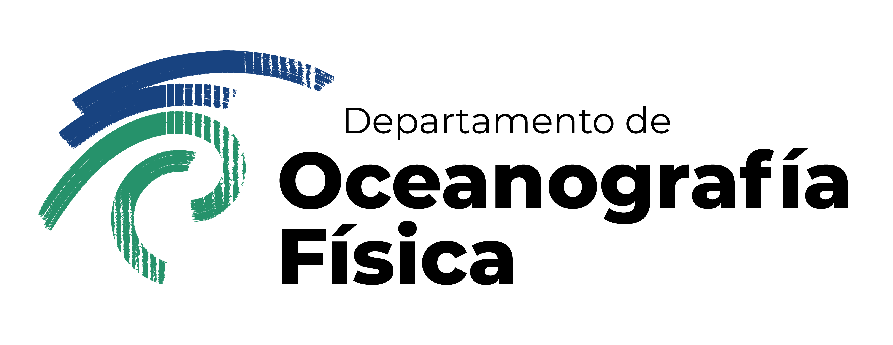

De análisis exploratorio a proyecto científico reproducible

En las sesiones anteriores:
Ahora María Luisa tiene algo valioso:
Nueva pregunta:
¿Cómo conservamos la historia del proyecto, compartimos el trabajo y evitamos perder versiones que funcionaban?
Hoy usamos Git y GitHub para convertir una carpeta de trabajo en un proyecto científico reproducible.
Al terminar podrán:
git status;git diff;git add;git commit;.gitignore;git push;git pull;template en GitHub
↓
crear tu propio repositorio
↓
git clone
↓
copiar notebooks/scripts del análisis
↓
git status → git diff → git add → git commit
↓
.gitignore
↓
README
↓
git push
↓
conflicto en parejasNo veremos hoy: branches, pull requests, rebase, GitHub Actions o colaboración avanzada.
El control de versiones responde preguntas como:
En investigación esto aplica a:
.tex o .qmd;Los sistemas de control de versiones existen desde mucho antes de Git.
Git fue creado por Linus Torvalds en 2005 para manejar el desarrollo del kernel de Linux después de que la comunidad Linux dejó de usar BitKeeper. Ver: Git Book, Git history, GitHub Blog.
Idea clave: Git nació para proyectos grandes, distribuidos y colaborativos.

| Herramienta | ¿Qué es? |
|---|---|
| Git | Programa que registra la historia de cambios en tu computadora |
| GitHub | Plataforma web para alojar repositorios Git y colaborar |
Puedes usar Git sin GitHub.
GitHub usa Git, pero no lo reemplaza.
Ejemplos actuales de repositorios científicos:
En proyectos científicos, Git sirve para conservar la historia del código, documentación y configuración.
No sustituye necesariamente a un repositorio de datos.
Un repositorio es una carpeta que Git está rastreando.
Contiene:
proyecto/
├── .git/ # base de datos interna de Git
├── README.md
├── scripts/
├── notebooks/
└── environment.ymlLa carpeta .git/ guarda la historia.
Normalmente no la editamos a mano.

Imagen: Software Carpentry
Git piensa en términos de cambios.
No sólo pregunta:
¿qué archivo tengo?
sino:
¿qué cambió con respecto a la última versión guardada?

Imagen: Software Carpentry
git add?git add nos permite decidir qué cambios entran al próximo commit.
Eso es útil cuando modificamos varias cosas pero queremos guardar la historia en pasos lógicos.

Imagen: Software Carpentry
Un commit es una fotografía lógica del proyecto en un momento dado.
Cada commit tiene:
Malos mensajes:
Mejores mensajes:
Add SST anomaly analysis
Document precipitation data source
Fix regional mean function
Create summary figureUn buen commit responde:
¿Qué cambio hice y por qué debería importarle a mi yo del futuro?
Cada quien necesita:
GitHub permite conectarse por HTTPS o SSH.
Si usas SSH, revisa:
Una URL SSH se ve así:
Una URL HTTPS se ve así:
En clase pueden usar cualquiera de las dos. Lo importante es que puedan hacer push.
La estructura del proyecto también es parte de la reproducibilidad.
Nuestro template está adaptado de la estructura usada en la ECCO Summer School 2025:
enso-baja-project-template/
├── data/
├── notebooks/
├── scripts/
├── figures/
├── .gitignore
├── environment.yml
└── README.mdReferencia: ECCO Summer School sample project repository.
En GitHub:
En la terminal:
Verifica dónde estás:
Si ves .git/, estás dentro de un repositorio Git.
git clone vs git initDos formas comunes de comenzar:
| Situación | Comando |
|---|---|
| El proyecto ya existe en GitHub | git clone URL |
| El proyecto sólo existe localmente | git init |
Como clonamos desde GitHub, Git ya sabe cuál es el repositorio remoto.
Debe aparecer algo como:
origin git@github.com:usuario/enso-baja-project.git (fetch)
origin git@github.com:usuario/enso-baja-project.git (push)o una URL HTTPS.
origin es el nombre convencional del remoto principal.
git statusEste comando será tu mejor amigue.
Nos dice:
Regla práctica: antes de hacer algo importante, ejecuta git status.
Ahora copiaremos al repositorio parte del trabajo de la sesión anterior.
Ejemplo, si tu carpeta anterior se llama enso_baja y está al lado del repo:
También puedes copiar manualmente desde Finder/Explorer.
Git distingue entre:
| Estado | Significado |
|---|---|
| untracked | Git ve el archivo, pero todavía no lo está rastreando |
| modified | Git ya lo conoce y detecta cambios |
| staged | El cambio está preparado para el próximo commit |
| committed | El cambio ya quedó guardado en la historia local |
Un archivo nuevo no entra a la historia hasta que hacemos git add.
Abre README.md y completa al menos:
## Pregunta
¿Cómo se relaciona la variabilidad de SST frente a Baja California con ENSO?
## Datos
- NOAA OISST V2.1
- Oceanic Niño Index
- Precipitación mensual en EnsenadaGuarda el archivo.
Luego:
git diffgit diff muestra cambios línea por línea.
Símbolos comunes:
diff es muy útil para revisar antes de guardar una versión.
git addAhora README.md está en el staging area.
git add no crea una versión permanente.
Sólo prepara cambios para el siguiente commit.
git commitnotebooks/.scripts/.Pregunta: ¿por qué es mejor este commit que uno llamado actualización?
Ejemplo:
a3c21f0 Agregué análisis SST y ENSO
5b81d3a Descripción pregunta de investigación
2f4a9c1 Initial templateCada línea representa un commit.
El identificador corto (a3c21f0) permite referirnos a una versión específica.
Edita temporalmente README.md y escribe una línea claramente equivocada.
Luego:
README.md.Idea clave: Git puede ayudarte a experimentar sin miedo, siempre que guardes versiones con commits.

En ciencia de datos, un repositorio no siempre debe contener todo.
| Archivo/directorio | ¿Git? | Comentario |
|---|---|---|
README.md |
sí | documentación del proyecto |
environment.yml |
sí | ambiente reproducible |
scripts/*.py |
sí | código reutilizable |
notebooks/*.ipynb |
sí | análisis y notas |
| figuras finales | depende | útil si aparecen en README |
| datos grandes | no | mejor distribuir por otra vía |
| salidas de modelos | no | pueden ser enormes |
| contraseñas/tokens | jamás | riesgo de seguridad |
.gitignoreEl template incluye:
# Datos
data/*
!data/README.md
# Jupyter
.ipynb_checkpoints/
# Python
__pycache__/
*.py[cod]
# Sistema operativo / editores
.DS_Store
Thumbs.db
.vscode/La carpeta data/ existe y tiene un README, pero los archivos de datos no se suben.
Copia un archivo de datos a data/, por ejemplo:
Luego:
Ese archivo no debería aparecer como untracked.
Si aparece, revisa .gitignore.
.gitignoreAbre .gitignore y responde:
data/* ignora los datos?!data/README.md no ignora el README?figures/? ¿Todas las figuras o sólo algunas?El README.md debe permitir que otra persona entienda:
Si alguien abre tu repo en seis meses, el README debe orientarla/o antes de leer el código.
Esto es lo mínimo para que el proyecto sea legible.
Si decides versionar una figura final:
puedes mostrarla en el README con:
Las figuras en el README ayudan a comunicar el resultado, pero deben poder regenerarse desde el código.
Edita README.md y completa:
## Pregunta## Datos## MétodosDespués:
git commit guarda cambios localmente.
git push envía commits a GitHub.
pushSi Git pide autenticación, sigue las instrucciones de GitHub.
Si el upstream no está configurado:
Abre GitHub y actualiza la página del repositorio.
¿Ves tus commits?
¿Ves tu README actualizado?
¿Qué hace cada comando?
Respuesta:
add: prepara cambios.commit: guarda una versión local.push: envía commits al remoto.Un conflicto ocurre cuando Git no puede decidir automáticamente cómo combinar dos cambios.
Ejemplo:
README.md.README.md.Un conflicto no es un error catastrófico.
Es Git diciendo:
Necesito que una persona decida qué versión final debe quedar.
Trabajaremos en parejas.
Usa su repositorio del proyecto y agrega a Persona B como colaboradora en GitHub.
En GitHub:
Ambas clonan el repo de A:
En README.md, ambas personas buscan esta sección:
La línea que inicia con _Resume... será modificada por ambas personas.
Persona A cambia la línea por:
Luego:
Persona B no hace pull todavía.
Cambia la misma línea por:
Luego:
¿Qué ocurre?
Git probablemente dirá algo como:
Esto significa:
El remoto tiene cambios que tu copia local todavía no tiene.
No queremos sobrescribir el trabajo de A.
Primero debemos traer los cambios remotos.
Persona B ejecuta:
git pull trae cambios del remoto e intenta mezclarlos con los locales.
--no-rebase indica que queremos resolverlo como un merge.
Como ambas personas cambiaron la misma línea, Git no puede decidir automáticamente.
En README.md, Persona B verá algo parecido a:
<<<<<<< HEAD
La precipitación en Ensenada es mayor durante algunos eventos El Niño.
=======
La SSTA frente a Baja California aumenta durante algunos eventos El Niño.
>>>>>>> origin/mainSignificado:
Podemos escribir una versión mejor que combine ambas ideas:
Después de editar:
Luego:
El commit de resolución queda registrado en la historia.
Persona A ahora hace:
y recibe la versión resuelta.
Ahora ambas copias locales y GitHub tienen la misma historia.
A trabaja B trabaja
↓ ↓
A commit B commit
↓ ↓
A push B push rechazado
↓
B pull
↓
conflicto
↓
resolver
↓
add + commit
↓
pushGit no perdió el trabajo de nadie.
Git obligó a revisar explícitamente un cambio ambiguo.
Mensaje:
Posibles causas:
Solución:
Busca .git/.
Mensaje:
Significa que Git no detecta cambios pendientes.
Puede ser bueno.
Pero si esperabas cambios, revisa:
.gitignore?Mensaje:
Significa que ya hay un remoto llamado origin.
Ver:
Cambiarlo:
Ver remoto actual:
Cambiar a SSH:
Verificar:
Mensaje típico:
Solución usual:
Resolver conflictos si aparecen.
Después:
Cada estudiante o pareja debe entregar un repositorio con:
Los datos pueden estar en data/ localmente, pero no deben subirse a GitHub.
Debe incluir:
No tiene que ser largo.
Sí debe ser claro.
Idealmente el historial debe contar una historia:
Hoy aprendimos que Git no es sólo una herramienta para programadoras/es profesionales.
En ciencia, Git ayuda a:
Mensaje final:
Un proyecto científico no es sólo una figura final.
Es la historia reproducible de cómo llegamos a ella.
Estas diapositivas están basadas parcialmente en:
Adaptación para el minicurso Introducción a herramientas computacionales para Oceanografía Física, CICESE, 2026.

Introducción a herramientas computacionales para Oceanografía Física - Octubre 2026